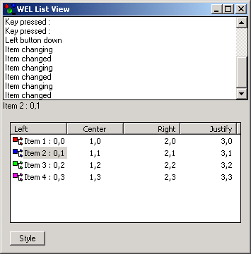

List View Sample

Compiling
To compile the example:
- Launch EiffelStudio.
- Select Use existing Ace (control file) and click OK.
- Browse to Eiffel50\examples\wel\list_view\.
- Choose Ace.ace
- Choose the directory where the project will be compiled, by default the same directory containing the Ace file.
If you select another directory than the default one, please copy icons (*.ico) and resource files (*.rc) from the
default directory (the one containing the Ace file) to the new
one.
- Click OK.
Running
After launching the program, a window will be displayed containing a pair of WEL_LIST_VIEW. Clicking the button marked "style"
will modify the style of the lower list view. If you click the mouse within this lower list view, you will see notification of events appearing in the upper list view.
Under the Hood
LISTVIEW_DEMO redefines `init_application' in order to load the
WEL_COMMON_CONTROLS_DLL and the WEL_RICH_EDIT_DLL.
LISTVIEW redefines many of the `on_' features inherited from WEL_LIST_VIEW in order to
generate output for the user.
The style of the LISTVIEW_DEMO is changed by calling set_style with the required new style.
This sample contains the following classes:
See Also
WEL_LIST_VIEW